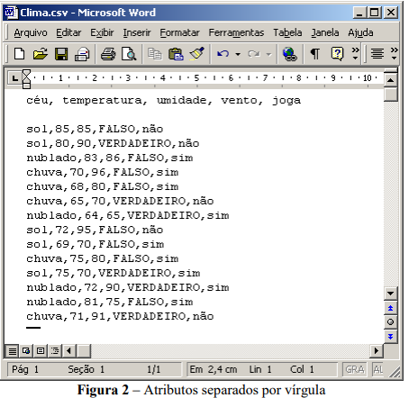

Instalação e Geração de Arquivo ARFF
Weka é uma coleção de algoritmos de aprendizado de máquina para tarefas de mineração de dados. Ele contém ferramentas para preparação de dados, classificação, regressão, agrupamento, mineração de regras de associação e visualização. Encontrada apenas nas ilhas da Nova Zelândia, a Weka é uma ave que não voa e tem uma natureza inquisitiva. O nome é pronunciado assim, e o pássaro soa assim. No site, existem vários cursos on-line gratuitos que ensinam aprendizado de máquina e mineração de dados usando o Weka. Confira no site os cursos para detalhes sobre quando e como se inscrever. Os vídeos dos cursos estão disponíveis no Youtube.
Para instalação do Weka utilize este link Clique aqui
Suponhamos que tenhamos alguns dados para gerar regras de associação ou para classificar, estes dados por sua vez, podem estar armazenados na forma de uma planilha ou de um banco de dados. Como fzer para utilizar estes dados no Weka?
O Weka possui um formato próprio, o ARRFF o qual temos que descrever o domínio do atributo, pois o mesmo não pode ser obtido automaticamente pelo seu valor. Antes de aplicar os dados a qualquer algoritmo do pacote Weka estes devem ser convertidos para o formato ARFF que consiste basicamente de duas partes:
A geração de um arquivo a partir de planilhas eletrônicas ou banco de dados é possível através
da exportação de dados para arquivos CSV. Uma vez feito isso, é necessário apenas carregar o arquivo em
um editor de texto e adicionar o nome do conjunto de dados usando os descritores do arquivo e dos atributos
conforme a regra:
No exemplo a seguir, temos os dados armazenados em uma planilha do Microsoft Excel. Para
salvar em modo texto no exemplo utilizou-se o editor Microsoft Word. Podemos utilizar outros programas
para converter os dados para o formato ARFF. A Figura 1 mostra uma planilha do Microsoft Excel
contendo os dados atmosféricos.
Para gerarmos um arquivo onde os dados serão separados por vírgula devemos clicar menu usar
a opção Salvar como. Na caixa de diálogo Salvar como tipo selecionar a opção CSV (separado por vírgulas)
digitamos o nome do arquivo e clicamos no botão Salvar, a mensagem que vem a seguir (arquivo.csv pode
conter recursos que não sejam compatíveis com CSV (separado por virgula). Deseja manter a pasta neste
formato?) clique em Sim.

Em seguida, abrir o arquivo com o Microsoft Word, onde a primeira linha representa o cabeçalho das colunas, ou seja, o nome dos atributos sendo separados por vírgula como mostrado na Figura 2. As linhas seguintes representam os registros onde cada atributo do registro está separado por virgula. Devemos acrescentar o cabeçalho do arquivo ARFF como mostrado na Figura 3. Temos então na primeira linha o nome do conjunto de dados atribuído pelo comando @relation nome_do_conjuto_de_dados, em seguida temos a relação dos atributos, onde colocamos o nome do atributo e tipo ou seus possíveis valores, definido por @attribute nome_do_atributo tipo ou {valores}, na seção dos dados colocamos o comando @data e nas próximas linhas colocamos os registros onde cada linha representa um registro.
O passo seguinte é gravar o arquivo, para isso selecionamos no menu Arquivo a opção Salvar como... no menu Salvar como tipo selecione a opção Somente texto com quebra de linha, em Nome do arquivo digite o nome do arquivo com a extensão arf
As árvores de decisão são modelos hierárquicos utilizados em várias áreas do conhecimento por sua capacidade preditiva e de resolução de problemas de maneira simples e objetiva. Entretanto, apresentam algumas limitações relacionadas à sua adequação à base de dados e ao se atentar quanto aos procedimentos para seleção dos parâmetros de crescimento e poda a serem adotados. Desta forma, têm-se como objetivo avaliar e discutir a performance do algoritmo J48 para construção de modelos de tomada de decisão em árvore em base de dados com atributos de diferentes tipos. Para tanto, realizaram-se experimentos em 10 bases de dados disponíveis em repositório internacional, considerando como variantes os métodos de treinamento, teste e poda, aplicados em toda base de dados e com o uso dos métodos Wrapper e CFS (Correlation-based Feature Selection) para seleção de atributos. Identificou-se que na presença de dados contínuos, os únicos modelos que apresentaram boa capacidade preditiva estiveram presentes em situações em que a grande quantidade de exemplos puderam compensar tal deficiência. Os modos de treinamento "validação cruzada" e "divisão por porcentagem" mostraram-se similares em suas predições quando ajustados a 10 folds e 75%, respectivamente. Ademais, a seleção de atributos não foi capaz de gerar melhores predições denotando que tal método de forma isolada não compensa possíveis inadequações nas bases de dados. Pode-se constatar que os resultados referentes à capacidade preditiva dos modelos são fortemente direcionados pelo quantitativo de exemplos pertencentes à base, presença de dados contínuos e de dados com ruído.
Árvores de decisão fornecem uma representação gráfica para um processo de decisão.Elas permitem mostrar quais são as possíveis consequências e os resultados esperados a partirde uma decisão que foi tomada.
Uma árvore de decisão é composta pelos seguintes elementos (veja na figura 1):
Num ponto de decisão(ou vértice de decisão), geralmente representado por um quadrado, deve-se selecionar uma alternativa dentre um conjunto finito de ações disponíveis.Essas alternativas são representadas pelas arestas da árvore.Quando há um custo associado à alternativa, a aresta recebe um label que irá representar o custo.Cada aresta deve estar conectada a um ponto de decisão, a um ponto de risco ou a um resultado.
Um ponto de risco, representado por um cículo, é um vétice que indica que um evento é esperado.Eventos são descritos nas arestas que saem dos pontos de risco e a casa uma delas é associada uma probabilidade de ocorrência.
São vértices, representados por um retângulo, que indicam os ganhos ou perdas resultantes das alternativas escolhidas e dos eventos ocorridos.